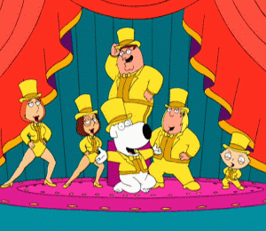
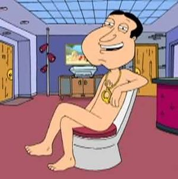
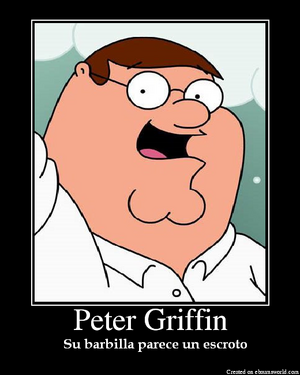
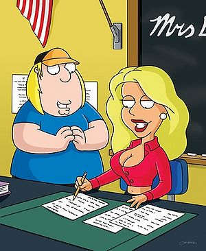

Padre de Familia
 De: La Frikipedia, la enciclopedia extremadamente seria.
De: La Frikipedia, la enciclopedia extremadamente seria.
 Es un tipo Familiaaaaar!!
 ¿Que coño pinta este aquí?
Miembros de la familia
- Peter Griffin: es el hombre ideal de Marujita Díaz,gordo cabron y apestoso que ademas no sabe decir más de dos palabras con sentido, pero da sexo. Algunos estudiosos afirman que es el hermano secreto de Homer Simpson, pero por su parte él no hace declaraciones sobre el tema. Disfruta bebiendo con sus amigos y dando de comer a personajes de televisión.
 Nueva definicion para "teabagging"
- Lois Griffin: llevaba el camino de toda mujer perfecta traumatizada por ser un mono de feria ambulante rumanica...hasta que encontró a Peter. Lois enseña a tocar el piano porque tocar tanta flauta travesera le produjo jaqueca. Su destino según Paco Porras (lo leyó en una cebolla) es morir a manos de su hijo Stewie.
- Meg Griffin: hace el papel de personaje feo de la serie,además, el descontrol de sus hormonas le han llevado en algún episodio a practicar zoofilia (concretamente con un cerdo al que besó en un armario, ya que los cabrones de sus amigos le hicieron creer que había un puto chaval que le gustaba y con el perro Brian Griffin). Se dice que su gorro es una prolongación de su cuerpo que le otorga superpoderes y que por eso nunca se lo quita.
- Christopher Cross Griffin: ¿quién decía que los gorditos no tenían protagonismo? Chris, conocido como el niño elefante, es casi tan tonto como su padre, pero al contrario que toda su familia es rubio, por lo que la anterior afirmación quedaría anticuada si se demuestra que en realidad es el hijo de Nick Carter.
- Stewie Griffin: bebé que junto con el perro es el personaje más inteligente. Está obsesionado con matar a su madre y conseguir conquistar el mundo. Tiene superpoderes: se comunica mediante telepatía con los telespectadores y con el perro, únicos seres que pueden entenderlo. Sobre su sexualidad hay muchas controversias, por un lado afirma ser gay, por otro gustarle las orgías con conejitas del Play Boy. Para más información de este personaje( que es el favorito de todos) Entra en el enlace Stewie
- Brian Griffin: se trata del perro de la familia Griffin que sobrepasa el cociente intelectual de toda la familia en 100 puntos (en un test de inteligencia Peter obtuvo un -10). Es un sabio al que le gusta beber Martini acompañado de un buen par de tetas, mientras entona alguna canción con su maravillosa voz.
- Los Cleveland: Vecinos de los Griffin, Definidos en la serie Como "Gente de Chocolate"
- Opi: Aunque Opi no sea un Griffin, siempre vale la pena hacerle un hueco en cualquier familia, Opi puede ser útil tanto para ser empleado del mes o como debatir sobre macroeconomía con Peter.Definición de Opi según la serie: Una carga para el Estado (que Dios lo salve) y un ser inacapaz de integrarse a la sociedad. *Ruidos característicos de Opi*. Opi también puede ser empleado para que se le metan los dedos en la boca y el devolviendo la cortesía muerde al dedo. Actualmente Opi está casado, con dos hijos, un perro,un hámster, un ferrari y una casa al lado de Julián Muñoz y Manuel fraga en Marbella. Trabaja como presidente de la FOX
La serie

giggity giggity giggity giggity/toma toma toma toma
Consiste en un conjunto de palabras vocalizadas por actores de doblaje borrachos dejando el pabellón de los Estados Unidos y George W. Bush bastante altos.
La trama principal consiste en ....bueno...deberia ocurrirseme algo..."!Dios mio Lois..donde he puesto los pantalones??¿?¿!"
-"!Papa!!!!!!!!!!!!""El mono de mi armario no me deja dormir!!!""
-"!UUUUUUUUUUHHH AAAAAAAAGHHHHHHHHHHHH!"
-Esto es más [introduzca adjetivo] que aquella vez que... [introduzca flashback]
Hechos sobre los Griffin
- El padre de Peter es en realidad Zapatero pero con gafas.
- Stewie es el único que ha podido tirarse a la cerdita Peggy.
- Peter es la única persona que cuando bebe hace mejor las cosas.
- Lois solía esculpir penes de famosos, les devolvía el favor con una mamada. Hasta el día de hoy ha conseguido reunir 1.200 penes de arcilla.
- Dios es amigo de los Griffin. Jesucristo es su vecino.
- Brian estuvo recluido en un centro de desintoxicación para tratar su adicción a la cocaína, gracias a ello consiguió el premio a la Mejor Película Porno del Año (un Yoyas).
- Peter proclamó su casa como un Estado independendiente, conocido como Petoria.
- Peter conoce a Bill Gates.
- Chris fue poseído por un grano parlante con mala leche, se dice que era todo obra del omnipotente Diox.
- Uno de los enemigos jurados de peter es lord aguafiestiston,que en muchas ocasiones le fastidió las fiestas obligando a todo el mundo a ver grabados en papel y comentarlos.
- Stewie, al parecer discípulo de MacGyver, creó una bomba en el interior de su madre con la placenta y tres glóbulos rojos que explotará en el 50 aniversario de Lois.
- Se sospecha que Stewie Griffin visita a menudo la Frikipedia en busca de ideas para dominar el mundo, aunque no se ha podido demostrar.
- Son conocidos de la muerte, sobre todo Peter, cosa que puede explicar que siga vivo despues de tantos golpes como..... Mejor vean la serie
- Peter se pelea con un pollo gigante en tres capítulos y de forma brutal, aniquilando mientras dura la pelea, a toda persona que se interpongan en el camino. Todo por vender el pollo unos vales caducados.
- Casi se pelean en un cuarto capítulo cuando la muerte lleva a Peter al 1984.
- Peter esta tan gordo que tiene su propia orbita
- Peter no se tiro un pedo hasta cumplir los 30
- La cabeza de Stewie tiene forma de balon de rugby por darse un golpe con el techo
- Por culpa de la estupidez de Peter,Lois tiene un tumor en el cerebro que canta
Teoría sobre la aparición de la serie
Un día un grupo de estadounidenses esquizofrénicos borrachos fueron capturados por la FOX. Los directivos de la cadena buscaban guionistas para una nueva serie para poner entre "Los Simpsons", "Expediente X" y los videos porno caseros. Encerraron a los locos en el sótano de la FOX con varios fardos de marihuana, papel de arroz y máquinas de escribir. Los esquizofrénicos morados comenzaron a trabajar en el proyecto y así surgió Padre de familia. Débido a la condición en que los guionistas escriben los guiones no es de extrañar la aparición de frecuentes flashbacks (o alucinaciones producto de su locura y la maría) y paranoias que no vienen al caso.
Invitados Especiales
- Tu
- Drew Barrimore
- Ashlee Simpson.
- Keanu Reeves.
- Lindsay Lohan.
- Samuel L. Jackson.
- Tom Hanks.
- Penélope Cruz.
- Zinedine Zidane.
- Ricky Martin.
- Justin Timberlake.
- Kate Moss.
- Rob Schneider.
- Jim Caviezel y Chris Tucker.
- Triki.
- John Williams.
- Adolf Hitler.
- Eva Braun.
- Alf.
- Albert Einstein.
 La zorra antes de
follar largarse con Chris
Autor(es):
- Krusher
- Nexo
- Cortocircuito
- Haakjvork
- Cañonero
- Frikiman
- Sacro9999
- Viento
- Guilfer
- Alchacre
Frikipedia 2005-2016, Licencia
GFDL 1.2 - Extraído por FrikiLeaks